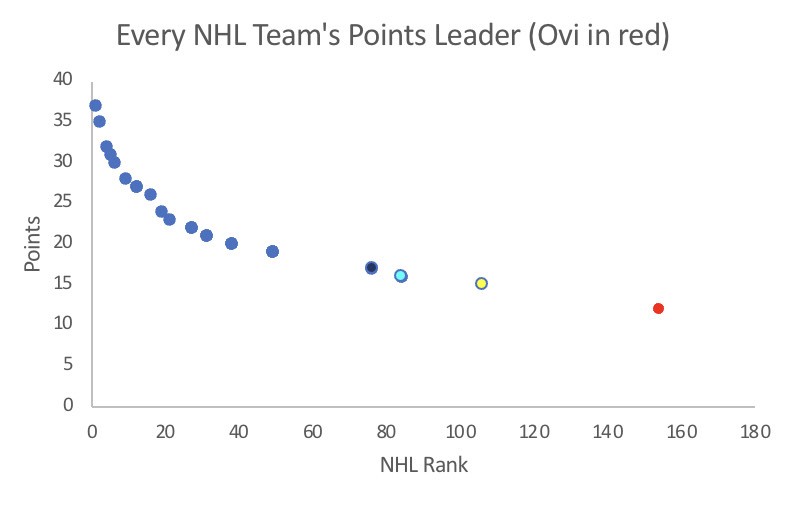
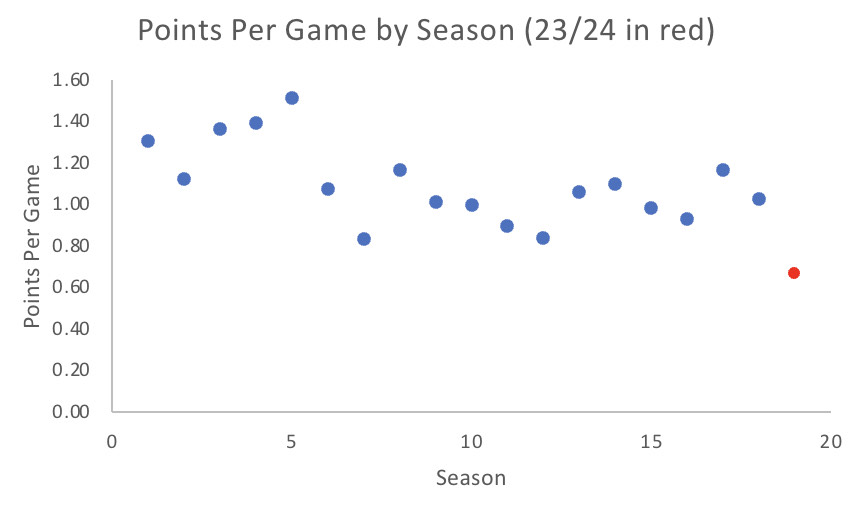

Why is that?
Let’s start with the elephant in the room: he’s not getting any younger. The Russian superstar turned 38 just before this season, and to some fans, it’s showing. I attended a Caps game myself earlier this year and found that fans who used to be in awe of Ovi, now cringe at seeing their main man struggle.
Credit: SportsNation
“He could probably work a little harder when he’s not trying to make the power play goals,” said long-time Capitals fan Elizabeth Lazier.
But even as chants of “Ovi” become chants of “Slow-vi” the numbers aren’t adding up. A quick look at his points tally reveals that he is the best offensive option for a team that’s firmly in playoff contention, but if you really look closely around the league, you can see that this may be misleading.

While it is true that nobody on the team has more points than him, look at his company around the league. The three other players in the same hemisphere as Ovi are Elias Lindholm of the 23rd ranked Flames, Thomas Hertl of the dead last Sharks, and Boone Jenner of the 27th ranked Blue Jackets. If anything, the fact that Ovechkin leads the Capitals in points says more about the depth of his team rather than the individual greatness of himself.
Since joining the team for the 2005 season (after his rookie season was canceled due to the NHL lockout), Ovechkin has led the team in points 14 of 18 seasons, and all four of the seasons he did not lead, he led the team in goals. So with that in mind, it might be beneficial to see where Ovi’s current season stands when compared to those throughout his career.

Ovechkin is on pace to have the worst season of his career, a notable drop in form from a player who led the team in points in each of the last two seasons.
The Capitals’ farm team, the Hershey Bears, are coming off a Calder Cup Championship (the Stanley Cup of the minor leagues) and have a ton of young talent at their disposal. However, as long as Ovechkin is present, those first line minutes are going to be gobbled up by a player experiencing a sudden and massive drop off in production compared to even last year.
So why keep him?
At the end of the day Alex Ovechkin has as good of a bargaining chip as any athlete ever has- he is within arms’ reach of one of the most coveted records in all of sports: Wayne Gretzky’s career goal record.
What makes this record so special is that while the points record may seem like a better interpretation of how good a player is, at the end of the day the object of the game is to put the puck in the net. You could also consider the fact that the points record is considered unbreakable, as Gretzky has more assists than anyone else has points. Long story short, the combination of what the record is, who holds it, and the fact that it may be the greatest attainable record in the sport makes Ovechkin’s chase a must see for any hockey fan.
Another wrinkle to the story is that Gretzky collected his tally across four NHL franchises, while Ovechkin has scored every single goal wearing the colors of the Capitals. That’s a distinction that the Capitals are keen to keep. However, he’s still about 70 goals away.
So, what’s the right thing to do here? The fans are conflicted. You have an embarrassment of riches in terms of young talent who aren’t getting and younger, or an aging veteran who could be 2+ years away from breaking that record if he keeps his current pace. He brought them a cup in 2018, but is his record so important that the team is willing to let the chase cost them a chance at another?